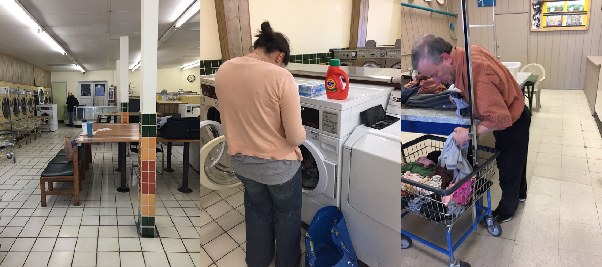

smart laundry machine companion app
In Spring 2015, I took CS160, UC Berkeley's User Interface Design course. Throughout the semester, I and three other team members worked on developing a mobile companion application for an IOT (internet of things) smart laundry machine system.
Our target user group was regular customers of public laundromats. Our application was not meant to be used by private owners of laundry machines.
These sketches helped our team clarify the app's features and what information it would display. They also provided a rough feel for the flow of the app's various screens.
We planned for the app to allow users to
We observed and interviewed users at various local laundromats.
We learned that users desired to find available/free machines, successfully wash and dry their laundry, keep their clothes safe, have fine-grained control over their laundry settings, know when to get their clothes, and pay with ease.
For the initial flowmap, I focused on dividing tasks into different sets of screens.
In the following video prototype, we demonstrated 5 potential user tasks: checking for available machines, paying for laundry, using a preset laundry setting, checking a reminder, and unlocking a laundry machine.
We tested our low-fidelity mockups at local laundromats. For each participant, we explained the purpose behind our application before asking him or her to complete our three tasks: unlocking the machine (easy), finding a nearby laundromat and reserving a washer (medium), and scanning a clothing item to create and save a laundry preset (hard).
Major insights from these interviews were that
This project is still in progress. So far, we have hi-fidelity layouts for the home screen and all payment screens.
{kind=link}
{kind=link}
{kind=link}
{kind=link}
{kind=link}